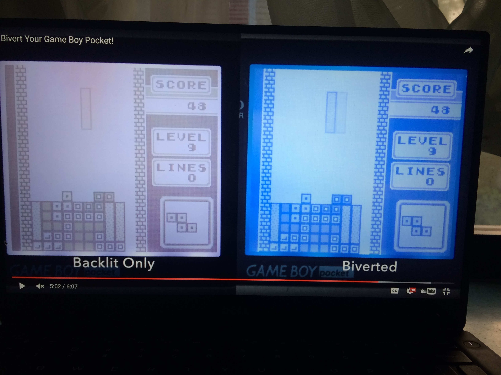

Jack Craig on Wednesday, May 11, 2016
17:00:11
No ctachphrase or trademark dance. Not gonna get those young social media black people reposting
17:02:13
And one guy who just plays wood block and carried a blind cane but isn't blind.
17:02:30
And his name is Fabian or some shut
17:03:49
3-4 per person
17:03:56
Stacked
17:14:39
Think I'm going to give up on Bill Maher. He's basically a hack. Nothing new to say. Just the same Christie/Palin shit and his tired anti-religion bit.
17:15:46
And his guests are t even any good anymore. Can't stand seeing him try to feel up Ariana Hiffington or call Reza Aslan a dumbass every other week.
17:22:53
I know. That's what sucks. New job Stewart replacement is shit. Jon Oliver is ok in small doses
17:25:46
What is involved in bi-verting?
17:27:08
Looks like a little chip you just solder in. Wanna try it?
17:37:34
It's kinda silly
17:37:55
Basically you invert with a piece of plastic, then you invert again with the chip
17:38:05
Does look nicer
17:38:07
So it comes out with really high contrast ir something
17:38:38
So is the polarized film already in there, or do you need it and the board?
17:42:27
Oh wait, it seems like it came with the backlight. So all you'd need is the chip
17:43:26

17:43:28
Seems preferable
17:47:48
Sent the chip your way. Why not; they're like $3. Could be neat. And apparently it's an extra 10 min of soldering
17:56:50
Alright sure. I'll give it a shot
17:57:15
Reddit agrees it's the way to go ¯\_(ツ)_/¯
17:57:49
💁🏼